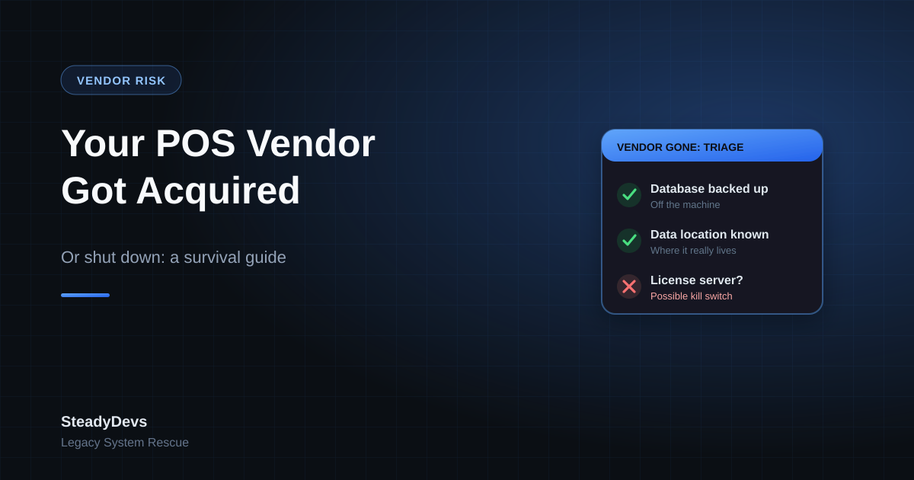

Your POS Vendor Got Acquired (or Shut Down): A Survival Guide
It usually starts small. An update that never comes. A support ticket that goes unanswered for a week, then a month. A renewal notice from a company name you don't recognise. Then the realisation: the vendor who built and ran your point-of-sale or business system has been acquired, has pivoted away from your product, or has simply shut down.
This is one of the most common—and most quietly dangerous—situations a small business can face. Your system still works today, so it doesn't feel like an emergency. But the safety net under it is gone, and every day of inaction narrows your options. Here's how to handle it properly.
First, Figure Out Which Situation You're Actually In
"My vendor is gone" covers several very different scenarios, and your response depends on which one you're facing.
Acquired and Still Supported
Another company bought your vendor and is continuing the product. This is the least dangerous case—but watch for the slow death: price hikes, forced migrations to the acquirer's newer platform, and degrading support as the old product is wound down. You have time, but you should start planning.
Acquired and Being Sunset
The acquirer wants their platform, not yours. They'll keep the lights on briefly, then announce an end-of-life date and push you to migrate—on their timeline and their terms. You have a deadline whether or not anyone told you the date yet.
Pivoted Away
The company still exists but has moved on—different market, different product. Your system is now an orphan they no longer invest in. Support may technically exist but is hollow. Treat this like a slow shutdown.
Genuinely Shut Down
The company is gone. No support, no updates, possibly no access to your own data export tools or license servers. This is the highest-risk case and the one that demands action now—especially if the software phones home to a license server that may someday go dark.
The license-server trap. Some POS and business systems validate their license against the vendor's server. If that server goes offline after a shutdown, your software can stop working entirely—even though it's installed on your own hardware. If you suspect this, it is the single most urgent thing to investigate.
The 48-Hour Triage: Secure What You Have
Before you think about replacements or rewrites, lock down your position. These steps cost little and dramatically reduce your risk.
- Back up your database—now, and on a schedule. Get a full copy of your data off the machine it lives on. If you don't know how, this is the first thing to pay someone to do.
- Find out where your data physically lives. Local SQL Server? A cloud database the vendor controls? If it's in the vendor's cloud, your data export options may vanish with them.
- Export everything you can while you still can: customers, products, transaction history, outstanding invoices, reports. Use the system's own export features before they become unavailable.
- Locate your license keys, install media, and credentials. Document admin passwords, database connection strings, and any license files. Don't leave them in one ex-employee's head.
- Check for a license-server dependency (see the warning above). Find out whether the software will keep running if the vendor's servers disappear.
- Stop auto-updates if the vendor is unstable. A final "update" from a collapsing company can do more harm than good. Freeze a known-good version.
Owning your data is everything. A working backup you control turns a five-alarm fire into a manageable project. Without it, every other option is built on sand. Do this first, even before reading the rest of this article.
Then Assess: How Exposed Are You Really?
Not every orphaned system is a crisis. Work through these questions honestly:
- Does it still do the job? A stable system that meets your needs can run for years without the vendor—if you control the data and it has no kill switch.
- Is it on supported infrastructure? Software stuck on an unsupported Windows version or an ancient SQL Server is a security and compliance problem independent of the vendor.
- Do upcoming requirements need changes? E-invoicing, tax changes, or new integrations may demand updates the dead vendor can never provide.
- How locked-in is the data? Open, exportable database vs. proprietary encrypted format changes everything about your options.
- Who understands it? Is there documentation, source code access, or anyone who knows how it works?
The answers sort you into one of three positions: comfortable (stable system, data owned, no near-term changes needed), watchful (works now but changes are coming), or urgent (kill-switch risk, locked data, or imminent compliance needs).
Your Options, From Cheapest to Most Drastic
1. Keep Running It—Deliberately
If the system is stable, the data is yours, and there's no kill switch, "do nothing" is a legitimate strategy—but only as a conscious decision with backups and a documented fallback. Many businesses run orphaned systems productively for years this way. The danger is drifting into it by accident instead of choosing it on purpose.
2. Take Over Maintenance with an Independent Developer
If you have source code access (or can obtain it), an independent specialist can take over support: fix bugs, make small changes, keep it running on current infrastructure, and add compliance features like e-invoicing. This is often dramatically cheaper than replacement and keeps the system your staff already know.
3. Bridge It with Integration
Sometimes the core system is fine but it can't do one new thing (e-invoicing, an online ordering channel, an accounting sync). Rather than replace it, build a focused integration layer around it. The old system stays; the new capability bolts on.
4. Migrate to a New System—Planned, Not Panicked
If the system is genuinely at the end of its life—kill switch, locked data, unsupportable—replacement is the answer. But do it as a planned migration with a clean data export and parallel running, not a weekend scramble. The worst replacements are the ones done in panic the week the old system died.
Don't let a sales rep set your timeline. A vendor going under is exactly when replacement vendors smell urgency and push expensive, rushed deals. Your job in the first weeks is to remove the urgency—secure your data and stabilise—so you can choose your next system on your terms, not theirs.
How to Avoid This Next Time
Whatever system you end up on, build in protection so the next vendor's troubles aren't your crisis:
- Insist on data portability. Before buying any system, confirm exactly how you export all your data in an open format—and test it.
- Prefer systems where you control the database. Self-hosted or open-format data beats a black-box cloud you can't extract from.
- Negotiate a source code escrow for custom-built systems, so code is released to you if the vendor fails.
- Keep your own backups independent of the vendor, always.
- Document the essentials: what the system is, where data lives, how to access it, and who to call.
- Watch for warning signs: slowing updates, support delays, staff departures, and ownership changes are early signals worth taking seriously.
The Bottom Line
A vendor disappearing feels like a catastrophe, but it's almost always a manageable project—if you act in the right order. Secure your data first. Diagnose which scenario you're actually in. Assess your real exposure honestly. Then choose the cheapest option that solves your problem, on a timeline you control.
The businesses that get hurt are the ones who either panic-buy a replacement under pressure or ignore the problem until a kill switch flips. You don't have to be either.
Vendor Gone? Get an Independent Assessment First.
Before you replace anything, SteadyDevs can help you secure your data, check for kill-switch risks, and tell you honestly whether your orphaned system can be kept alive—usually for far less than a rushed replacement.
Assess My Orphaned SystemFrequently Asked Questions
Because "works fine today" and "protected" are different things. Without the vendor, you have no one to fix a future bug, no support if it breaks, and possibly a license server that could one day shut it off. At minimum, secure independent backups and confirm there's no kill switch. Then you can choose to keep running it deliberately—which is fine—rather than discovering the problem at the worst possible moment.
If you have a source code escrow agreement, the shutdown should trigger release—check your contract. Without one, it's harder: you may be able to negotiate with whoever acquired the assets, or with former staff. If the code is truly unrecoverable, an independent developer can often still maintain or extend a system by working with the database and compiled application, though it's more limited. This is exactly why escrow matters before you need it.
It can be, under specific conditions: you control the data with independent backups, there's no license-server kill switch, it runs on supported infrastructure, and no upcoming regulation forces a change you can't make. If any of those aren't true, the risk rises. Treat it as a deliberate decision to review periodically, not a permanent set-and-forget.
Not necessarily on their timeline. If you own your data and your current version still runs without the vendor's servers, you may be able to stay put while you evaluate alternatives—including independent maintenance of what you have. Read the fine print on license terms and kill switches first. Don't let a forced-migration email stampede you into a deal you haven't compared.
It varies, but taking over maintenance of a working system is frequently a fraction of full replacement cost—you're paying for stabilization and specific changes, not a ground-up rebuild plus data migration plus retraining. Replacement makes sense when the system is genuinely end-of-life. The honest answer requires looking at your specific system, which is why an independent assessment before deciding usually pays for itself.